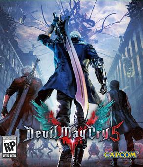

Devil May Cry 5
Devil May Cry 5 foi dirigido por Hideaki Itsuno, que pretendia fazer deste título o seu melhor trabalho. Ele pretendia tornar o jogo equilibrado tanto para os novatos quanto para os jogadores que retornavam, fornecendo uma dificuldade adequada e novos demônios. A Capcom também queria trazer um design mais realista inspirado no motor gráfico "RE Engine" fornecido em seu trabalho anterior, Resident Evil 7: Biohazard. Como resultado, os modelos foram usados ​​para criar os rostos dos personagens. O enredo foi escrito pelo escritor Bingo Morihashi, enquanto o cenário foi baseado em vários locais de Londres. Vários compositores trabalharam juntos na produção da trilha sonora do jogo, criando três temas principais centrados em torno dos personagens jogáveis.



SoundTracks:
Devil Trigger
Bury The Light